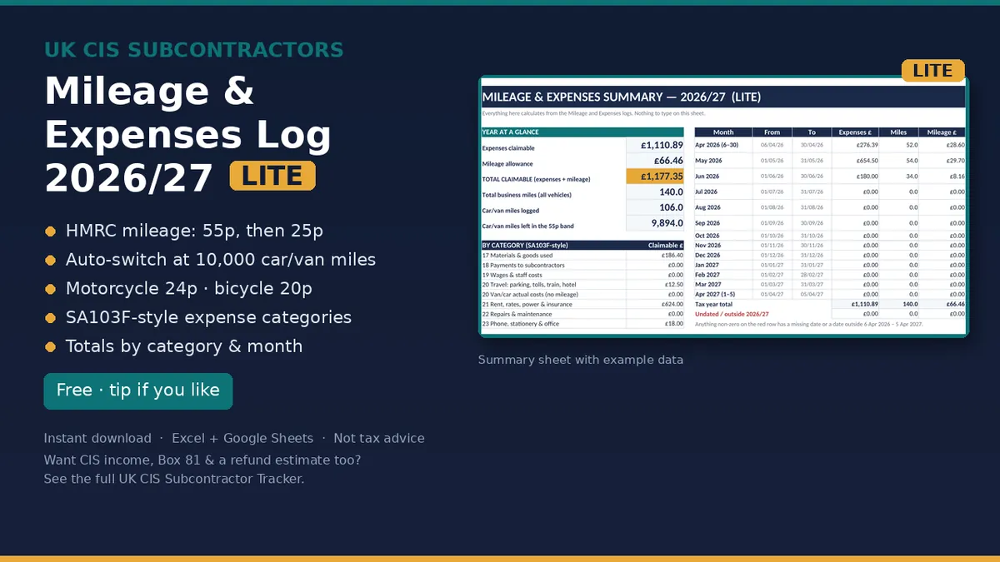

CIS
UK CIS Mileage and Expenses Log Lite 2026/27
Log every business mile and every receipt, and have your totals ready for Self Assessment. A lightweight workbook for the tax year 6 April 2026 to 5 April 2027.
Price on Gumroad
Free, pay what you want (£0+)
Buy on GumroadEstimate, not tax advice. It is a record keeping template, not HMRC filing software. Keep your receipts and check the rates on GOV.UK before you file.

Who it's for
- UK CIS subcontractors and sole trader trades who drive to jobs and buy their own materials, tools and PPE.
What's included
- Mileage log: HMRC's 2026/27 rates. 55p a mile for the first 10,000 car or van miles, then 25p, motorcycles 24p and bicycles 20p. A running total switches to 25p on the right trip.
- Expenses log: date, supplier, description, an SA103F style category dropdown, amount, business use % and the claimable amount.
- Summary: totals by category and by month, your mileage allowance and total claimable figure. Flags undated or uncategorised entries.
- Rates & Sources: every rate with the GOV.UK page it came from, and a 10,000 mile quick check.
- Start Here instructions and pink EXAMPLE rows you delete when ready.
Works in Excel, Google Sheets and LibreOffice. No macros.
What it isn't
- No CIS income ledger, no Box 81 total and no statement chase list.
- No refund, Income Tax or Class 4 NI estimate, and no quarterly totals. Those are in the full subcontractor tracker.
Preview

Free calculator
Want a quick figure first? No sign up.
Mileage and expenses log Lite: Free, pay what you want (£0+) on Gumroad
Estimate, not tax advice. It is a record keeping template, not HMRC filing software. Keep your receipts and check the rates on GOV.UK before you file.